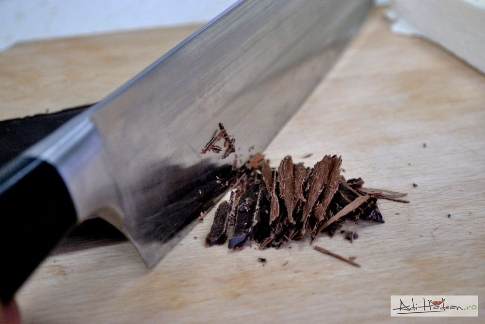
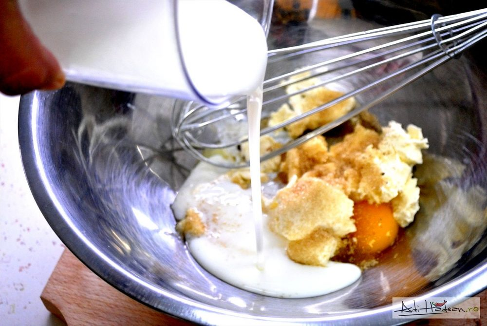
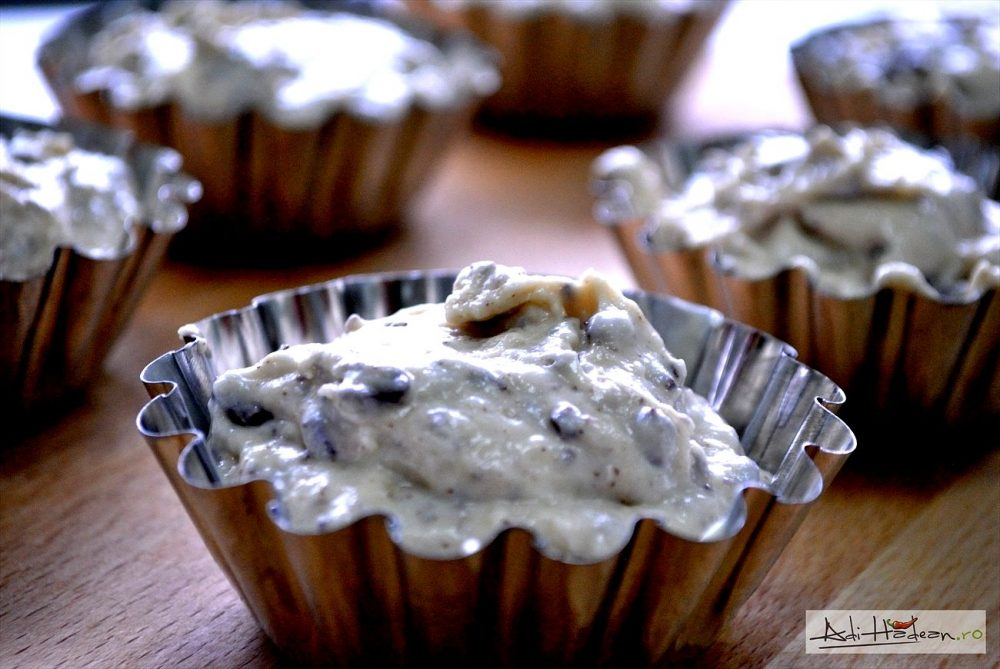
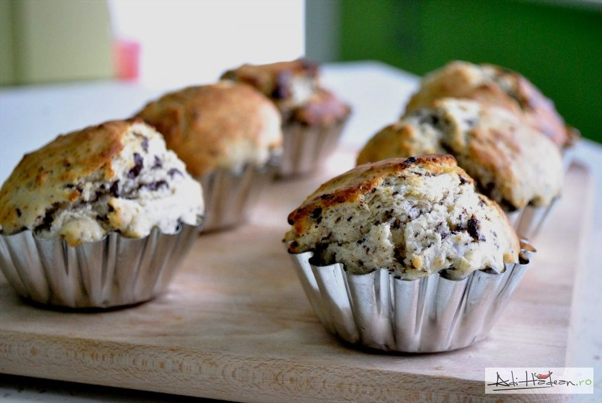

Copiilor le place ciocolata, e un lucru demonstrat (excepțiile sunt rare). E greșit să le interzicem să o mănânce doar pentru că poate fi rea, e mult mai important să discernem pentru ei și să le oferim ciocolată de calitate, în cantități mici și nu foarte des. Lucrul acesta va îndepărta ciocolata din sectorul „fructul oprit” și-i va obișnui pe cei mici cu un anumit standard. Ciocolata neagră, cu 60-70% cacao are conținut foarte mic de zahăr și dacă e folosită cu grijă, poate fi un aliat bun.





Ingredientele necesare:
- 240g făină
- 2 ouă
- 150g ciocolată
- 100g unt moale
- 150g zahăr
- 80ml lapte
- praf sare
- esentă de lămâie
Instrucțiuni pentru realizare desert:
- Răzuiți ciocolata în straturi subțiri
- Ciocolata răzuită se amestecă bine cu făina, zahărul și praful de copt. Laptele bătut, oul și untul se amestecă între ele până la omogenizare apoi se combină cu amestecul uscat.
- Compoziția obținută se pune în forme pentru brioșe (unse cu unt dacă e cazul, adică dacă nu-s de silicon sau nu aveți hârtie de copt pentru brioșe). Brioșele se coc 20 de minute la 180 de grade Celsius (cuptorul încins înainte).
- Umpleți formele cu amestec pentru prăjituri. Așezați-le într-o tavă și puneți-le în cuptorul încins la 200 de grade Celsius. Lăsați-le acolo pentru 10-12 minute. Semnul că-s gata: suprafața prăjiturilor crapă ca și pământul în vreme de secetă.
- Puteți să adăugați siropuri ori sosuri de fructe/caramel la desert, ori o linguriță de înghețată.
- Dacă aveți fructe de pădure proaspete puteți obține combinații fantastice.